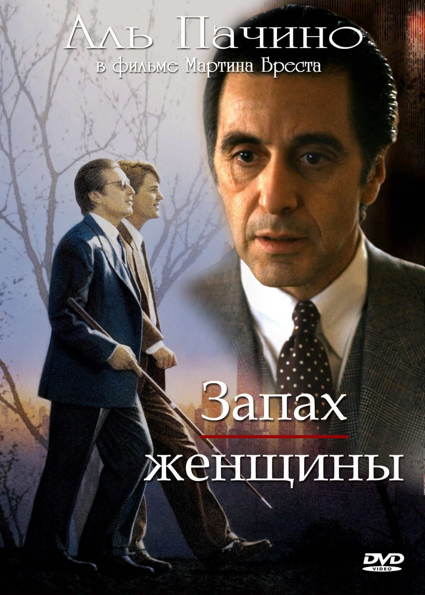

Крестный отец

Лицо со шрамом

Адвокат дьявола
Ирландец
Схватка

Дата рождения: 25 апреля 1940 (83 года)
Кинокарьера Пачино, как и других актеров, началась с эпизодических ролей. Часто его имя даже не фигурировало в титрах. Первым фильмом, где американца заметили, стала трагикомедия «Я, Натали». Более значительную роль исполнитель сыграл в 1971 году в картине «Паника в Нидл-парке». Но настоящая слава ожидала артиста после съемок в трилогии Фрэнсиса Форда Копполы «Крестный отец». Работа над криминальной драмой, раскрывающей тайную жизнь мафии, потребовала от создателей огромных трудов — чего стоил только грим Марлона Брандо, сыгравшего старика Вито в возрасте 48 лет. Сейчас без Брандо и Пачино невозможно представить этот фильм, а ведь немногие знают, что оба исполнителя чудом попали на съемочную площадку.
Аль Пачи́но был номинирован на «Оскар» 8 раз, но заветную статуэтку получил лишь за фильм «Запах женщины» в 1993 году.
Артист часто отказывался играть персонажей, которые потом становились культовыми. Так, например, он мог сняться в фильмах «Звездные войны», «Красотка», «Крамер против Крамера», «Крепкий орешек» и «Таксист».
Изначально фильм «Адвокат дьявола» задумывался как нечто среднее между боевиком и блокбастером. Аль Пачино это не устраивало, и он 5 раз отказывался от участия в картине, пока не переписали сценарий. Тем не менее актер все равно продолжал сомневаться. Чтобы окончательно его переубедить, Киану Ривз пожертвовал $ 2 млн из своего гонорара в его пользу.
| Год | Русское название | Оригинальное название | Роль |
|---|---|---|---|
| 1967 | Полиция Нью-Йорка | N.Y.P.D. | Jhon James |
| 1969 | Я, Натали | Me, Natalie | Tony |
| 1971 | Паника в Нидл-парке | The Panic in Needle Park | Bobby |
| 1972 | Крестный отец | The Godfather | Michael Corleone |
| 1973 | Пугало | Scarecrow | Lion |
| Серпико | Serpico | Serpico | |
| 1974 | Крестный отец 2 | The Godfather: Part II | Michael Corleone |
| 1975 | Собачий полдень | Dog Day Afternoon | Sonny |
| 1977 | Жизнь взаймы | Bobby Deerfield | Bobby |
| 1979 | Правосудие для всех | ...And Justice for All | Arthur Kirkland |
| 1980 | Разыскивающий | Cruising | Steve Burns |
| 1982 | Автора! Автора! | Author! Author! | Ivan Travalian |
| 1983 | Лицо со шрамом | Scarface | Tony Montana |
| 1985 | Революция | Revolution | Tom Dobb |
| 1990 | Местный стигматик | The Local Stigmatic | Graham |
| Дик Трэйси | Dick Tracy | Big Boy Caprice | |
| Крестный отец 3 | The Godfather: Part III | Michael Corleone | |
| 1991 | Фрэнки и Джонни | Frankie and Johnny | Johnny |